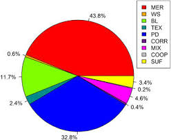
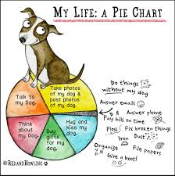

Welcome to Pet Health Portfolio
Ensure your pets lead a happy and healthy life by keeping track of their health checkups and well-being.
Dog Health Overview
Weight: 25-30 kg
Recommended Checkups: Every 6 months
Vaccinations: Rabies, Parvovirus, Distemper
Diet Tips: High-protein diet with balanced carbohydrates and fats.
Cat Health Overview
Weight: 4-6 kg
Recommended Checkups: Every 6 months
Vaccinations: Feline leukemia, FVRCP
Diet Tips: Protein-rich food with taurine for vision and heart health.
General Health Tips
- Hydration: Ensure your pets have constant access to clean water.
- Exercise: Regular exercise to maintain a healthy weight.
- Dental Care: Clean your pet's teeth to avoid gum diseases.
- Parasite Prevention: Regular deworming and tick prevention.